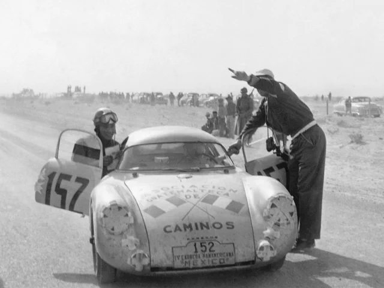

La Carrera Panamericana

Para alcanzar nuestro primer triunfo en la Carrera Panamericana, fue necesario contar no solamente con autos rápidos, sino también con la valentía y determinación de nuestros clientes, aficionados, técnicos y pilotos que formaron el mejor de los equipos. Nuestra aventura comenzó con el Porsche 550, el primer modelo de la marca diseñado exclusivamente para competir. De este modelo, la fábrica inscribió dos Spyder y los clientes, dos Coupé, los mismos que ya habían dejado huella en Europa al ocupar los dos primeros lugares en su categoría en las 24 Horas de Le Mans.
Con el número 154, compitió Jaroslav Juhan, el primer importador de la marca para Centroamérica. Con el 152, participó el guatemalteco José ‘Chepe’ Herrarte, quien hizo historia en México al ganar el primer lugar en la categoría de autos de hasta 1600 cc.
Este 2023, setenta años después, hacemos un homenaje a esa hazaña con dos autos únicos de Porsche Exclusive Manufaktur: el 718 GT4 RS Carrera Panamericana Special con el número 152 y el 718 GT4 RS Carrera Panamericana Special con el número 154, los cuales se inspiran en esos dos primeros Porsche 550 Coupé. De esta manera, honramos nuestro legado en el automovilismo deportivo y celebramos la importancia de compartir juntos un mismo sueño, porque solo al competir como un solo equipo se hace historia.
El Newsroom de Porsche es un servicio ofrecido por el Departamento de Comunicaciones de Porsche para periodistas, blogueros y la comunidad en línea.
Puede acceder al sitio oficial de Porsche AG en
© 2023 Dr. Ing. h.c. F. Porsche AG.
*La información presentada acá fue obtenida utilizando los procedimientos de homologación Euro 5 (715/2007/EC, 692/2008/EC, 566/2011/EC y ECE-R 101) y del Nuevo Ciclo de Conducción Europeo (NEDC). Las respectivas cifras no fueron recopiladas con vehículos individuales y no constituyen parte de la oferta. Esta información es proveída solamente con propósitos comparativos entre modelos respectivos. El consumo de combustible fue obtenido con vehículos con equipamiento estándar. Los equipamientos opcionales pueden afectar el consumo de combustible y el rendimiento de los vehículos. El consumo de combustible y las emisiones de CO₂ no son determinadas únicamente por el consumo de combustible, sino por el estilo de conducción y otros factores independientes a las especificaciones del vehículo.